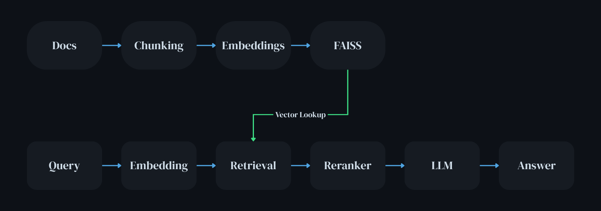

A production-style Retrieval-Augmented Generation pipeline designed to bridge raw documents and intelligent answers using local LLMs, semantic retrieval, and modular system design.
Traditional Large Language Models operate purely on pre-trained knowledge, which makes them unsuitable for tasks requiring up-to-date, domain-specific, or private information. They often produce confident but incorrect answers, commonly referred to as hallucinations.
This system addresses those limitations by introducing a retrieval layer that injects grounded, relevant context directly into the generation process.
The result is a system that is not only more accurate but also more trustworthy and aligned with real-world data workflows.
The architecture follows a two-phase pipeline: an offline indexing stage and a real-time querying stage.
Documents are transformed into vector representations and stored in a high-performance similarity index. At query time, relevant information is retrieved, refined, and passed to a local LLM for final answer generation.

Supports PDF and text ingestion, extracting clean raw content ready for downstream processing.
Implements sentence-aware splitting to preserve semantic meaning and optimise retrieval quality.
Uses BGE embeddings to map text into dense vector space where semantic similarity can be measured.
FAISS enables efficient nearest-neighbour search using inner product similarity on normalised vectors.
Fetches top-k relevant chunks based on query similarity in vector space.
Applies a cross-encoder to refine retrieved results with higher precision relevance scoring.
Qwen 2.5 via Ollama generates grounded answers using retrieved context.
Interactive terminal-based interface for querying the system in real time.
When a user submits a query, it is first embedded into vector space. The system retrieves the most relevant chunks using FAISS, refines them through reranking, and constructs a context-aware prompt.
The local LLM then generates a response grounded entirely in the retrieved information, ensuring both accuracy and contextual alignment.
The system is built around modularity, allowing each component to be independently improved or replaced. This reflects production-grade architectures used in enterprise AI systems.
It is designed to run fully locally on CPU, ensuring privacy, cost-efficiency, and independence from external APIs.
The separation between indexing and querying ensures scalability and performance optimisation.
Current limitations include lack of hybrid retrieval (keyword + semantic), minimal prompt engineering, and absence of evaluation metrics.
Future improvements could include query expansion, caching strategies, advanced prompt templates, and a web-based interface using Streamlit or React.